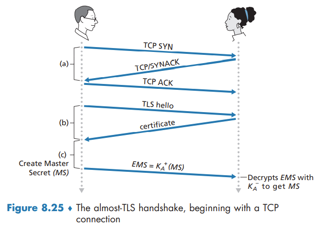
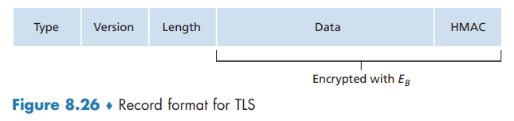

Securing TCP Connections TLS
Securing TCP Connections: TLS
You can identify that TLS is being used by your browser when the URL begins with https: rather than http.
TLS addresses these issues by enhancing TCP with confidentiality, data integrity, server authentication, and client authentication.
TLS is often used to provide security to transactions that take place over HTTP. However, because TLS secures TCP, it can be employed by any application that runs over TCP. TLS provides a simple Application Programmer Interface (API) with sockets, which is similar and analogous to TCP’s API.
The Big Picture
Almost-TLS (and TLS) has three phases: handshake, key derivation, and data transfer.
Handshake

Key Derivation
In principle, the master key (MS), now shared by Bob and Alice, could be used as the symmetric session key for all subsequent encryption and data integrity checking. It is, however, generally considered safer for Alice and Bob to each use different cryptographic keys, and also to use different keys for encryption and integrity checking. Thus, both Alice and Bob use the MS to generate four keys:
- EB = session encryption key for data sent from Bob to Alice
- MB = session HMAC key for data sent from Bob to Alice, where HMAC is a standardized hashed message authentication code (MAC) that we encountered in section 8.3.2
- EA = session encryption key for data sent from Alice to Bob
- MA = session HMAC key for data sent from Alice to Bo
Data Transfer
The HMAC is now a hash of the data plus the HMAC key MB plus the current sequence number.
Alice tracks Bob’s sequence numbers, allowing her to verify the data integrity of a record by including the appropriate sequence number in the HMAC calculation. This use of TLS sequence numbers prevents Trudy from carrying out a woman-in-the-middle attack, such as reordering or replaying segments.
TLS Record

A More Complete Picture
TLS Handshake
TLS allows Alice and Bob to agree on the cryptographic algorithms at the beginning of the TLS session, during the handshake phase. Additionally, during the handshake phase, Alice and Bob send nonces to each other, which are used in the creation of the session keys (EB, MB, EA, and MA). The steps of the real TLS handshake are as follows:
- The client sends a list of cryptographic algorithms it supports, along with a client nonce.
- From the list, the server chooses a symmetric algorithm (for example, AES) and a public key algorithm (for example, RSA with a specific key length), and HMAC algorithm (MD5 or SHA-1) along with the HMAC keys. It sends back to the client its choices, as well as a certificate and a server nonce.
- The client verifies the certificate, extracts the server’s public key, generates a Pre-Master Secret (PMS), encrypts the PMS with the server’s public key, and sends the encrypted PMS to the server.
- Using the same key derivation function (as specified by the TLS standard), the client and server independently compute the Master Secret (MS) from the PMS and nonces. The MS is then sliced up to generate the two encryption and two HMAC keys. Furthermore, when the chosen symmetric cipher employs CBC (such as 3DES or AES), then two Initialization Vectors (IVs)—one for each side of the connection—are also obtained from the MS. Henceforth, all messages sent between client and server are encrypted and authenticated (with the HMAC).
- The client sends the HMAC of all the handshake messages.
- The server sends the HMAC of all the handshake messages.
The server can compare this HMAC with the HMAC of the handshake messages it received and sent. If there is an inconsistency, the server can terminate the connection.
in TLS, nonces are used to defend against the “connection replay attack” and sequence numbers are used to defend against replaying individual packets during an ongoing session.
Connection Closure
having Bob send a TCP FIN segment to Alice. But such a naive design sets the stage for the truncation attack whereby Trudy once again gets in the middle of an ongoing TLS session and ends the session early with a TCP FIN.
The solution to this problem is to indicate in the type field whether the record serves to terminate the TLS session.